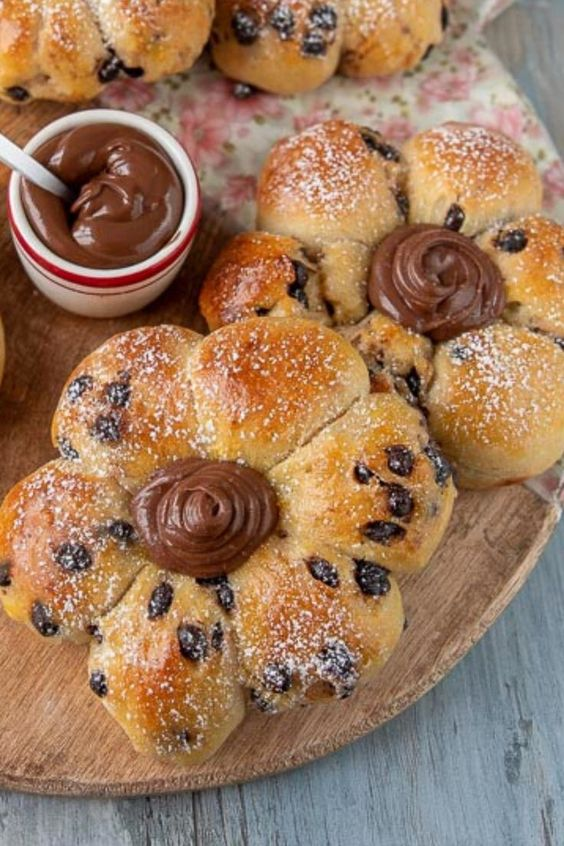

PãesReceitas

Flor de Chocolate
Deliciosa sobremesa que combina massa de bolo macia com um recheio cremoso de chocolate.
Deliciosa sobremesa que combina massa de bolo macia com um recheio cremoso de chocolate.